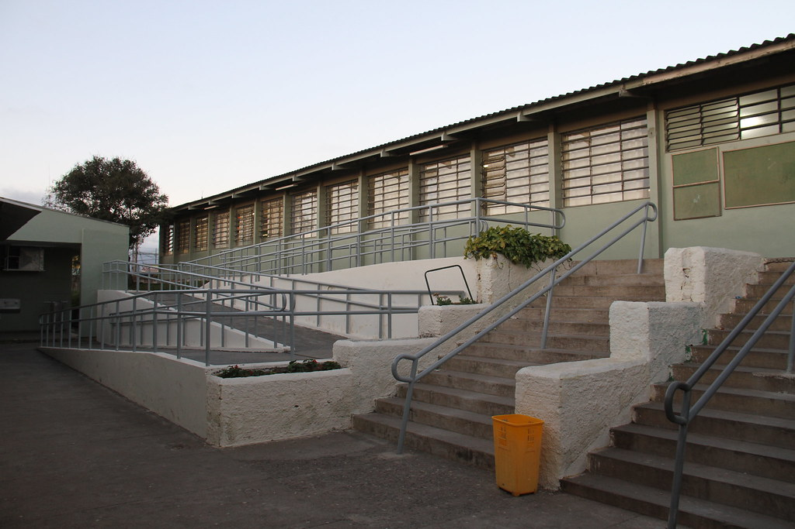

A escola foi inaugurada em 1981, conta com mais de 1 mil alunos, tem um ótimo recurso de aprendizagem, a escola é super limpa, lugares arejados e conta com uma ótima equipe de professores.
O Colégio é bom porque é organizado, leva a sério a educação dos alunos e tem um espaço amplo.
